risorse | stima dell'angolo di rollio con arduino
Attenzione: ho posto la massima cura ed attenzione nel redigere questi appunti; declino tuttavia ogni responsabilità per eventuali imprecisioni, errori od omissioni, così come declino ogni responsabilità per eventuali danni a cose, proprietà o persone derivanti dall’uso di questi contenuti.
Un amico motociclista, venuto a conoscenza del progetto dell'accelerometro grafico con Arduino che sviluppai qualche anno fa, mi chiede se è possibile estenderlo per mostrare anche l'angolo di rollio, a quanto capisco un parametro chiave per giudicare lo stile di guida di un biker.
Supponendo di montare l'accelerometro sulla motocicletta con l'asse x che punta verso la direzione di marcia, durante una piega a sinistra la ripartizione dell'accelerazione di gravità sui restanti due assi è indicata in figura:
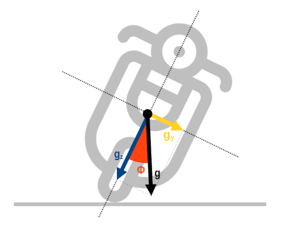Relazione tra l'accelerazione di gravità e l'angolo di rollio (icona “vespa” di Freepik da www.flaticon.com).
In arancio è evidenziato l'angolo di rollio Φ che si ricava facilmente con la formula:
Φ = atan(gy/gz)
Nella speranza che le cose si rivelino così semplici anche alla prova dei fatti, predispongo nuovamente il circuito dell'accelerometro, avendo cura questa volta di posizionare il sensore con l'asse x orientato verso il margine superiore del display; in questo modo l'angolo di rollio mostrato sul visore è consistente con la reale posizione assunta dal circuito:
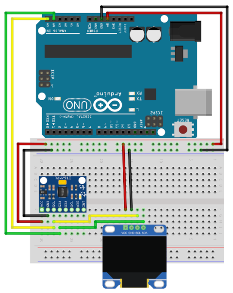La nuova disposizione dei componenti del circuito dell'accelerometro.
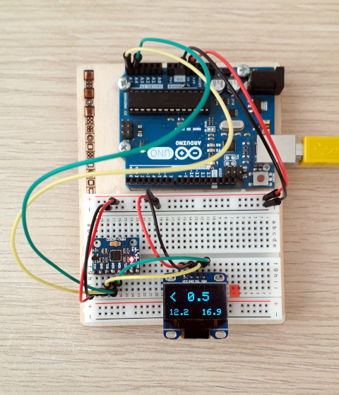La realizzazione pratica del circuito.
Lo sketch per questo primo esperimento è disponibile qui. Richiede l'installazione delle librerie MPU6050 e SSD1306 di Adafruit, rispettivamente per il supporto all'IMU e al display OLED. La logica è elementare: il programma interroga continuamente l'IMU e, dopo aver inoltrato sulla linea seriale i valori di accelerazione lineare e angolare acquisiti dal sensore, determina il valore dell'angolo di rollio e lo mostra sul display. Per comodità, nella parte inferiore del display sono riportati i valori minimo e massimo registrati fino a quel momento, ovvero la massima piega effettuata rispettivamente a sinistra e a destra. Per azzerare i due valori è sufficiente resettare la scheda col pulsante preposto. Due osservazioni:
// #define USE_SERIAL 1Tener presente che ciò può causare l'apparizione di strani artefatti sul display.
| Dicembre 2017 | Ottobre 2020 | |
|---|---|---|
| Acc.x | -2574 | -2609 |
| Acc.y | 336 | 332 |
| Acc.z | 1755 | 1822 |
| Gyr.x | N/A | 51 |
| Gyr.y | N/A | -31 |
| Gyr.z | N/A | 35 |
Non disponendo di una motocicletta mi sono adattato e ho usato l'unica due ruote che possiedo: una bicicletta! La prova è suddivisa in due parti: dapprima, da fermo, inclino la bicicletta verso destra di circa 45°, la mantengo in posizione per un paio di secondi, poi ripeto la stessa operazione sul lato opposto; monto quindi in bici e percorro un tratto rettilineo di 50m (tratto 1), quindi svolto rapidamente verso destra piegando il più possibile a coprire un arco di circa 60° (tratto 2), quindi piego a sinistra per tornare sul rettilineo iniziale (tratto 3) e giungere infine al punto di partenza (tratto 4):
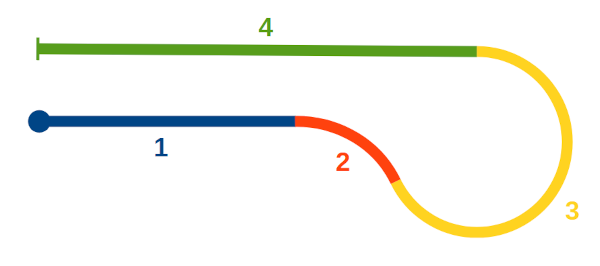Il tracciato del percorso di prova.
Ho caricato i dati raccolti dalla linea seriale in un foglio di calcolo e ho determinato l'andamento dell'angolo di rollio nel tempo, nella speranza di riuscire a distinguere le diverse fasi della prova su strada:
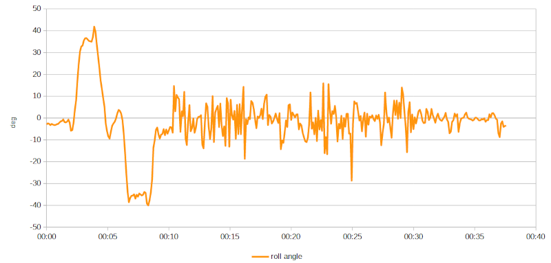Andamento dell'angolo di rollio nel tempo.
Si riconoscono chiaramente le inclinazioni iniziali, prima quella verso destra (angolo di rollio positivo), poi quella verso sinistra, entrambe vicine ai 40° e della durata approssimativa di 2 secondi. Il resto della traccia è caratterizzata da un livello di rumore tale da rendere impossibile l'individuazione delle quattro sezioni del test dinamico.
Ecco il diagramma dell'andamento delle accelerazioni lineari, espresse in g:
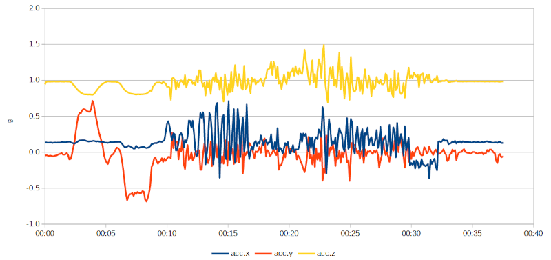Dati raccolti dall'accelerometro.
I picchi che caratterizzano la parte centrale dell traccia dell'accelerazione lungo l'asse x (traccia acc.x, minuti 00:10÷00:17) sono verosimilmente causati dalle pedalate effettuate sul rettilineo iniziale — tratto 1; la parte seguente, ove questi si riducono di intensità (minuti 00:17÷00:22), corrisponde alla sezione curvilinea del tracciato, durante la quale non ho pedalato — tratti 2 e 3; i picchi ricompaiono in corrispondenza delle pedalate fatte sul rettilineo finale (minuti 00:23÷00:30) — tratto 4; infine, poco prima del termine della prova l'accelerazione scende sotto lo zero (minuti 00:30÷00:32): è la frenata conclusiva.
Sembra che l'idea di determinare l'angolo di rollio a partire dalle accelerazioni lineari funzioni solo a sensore fermo a causa del rumore che appare quando questo è in movimento. Ho provato ad applicare una forma primitiva di filtraggio delle alte frequenze (media mobile) senza tuttavia ottenere risultati qualitativamente migliori.
Le accelerazioni angolari sono affette da altrettanto rumore?
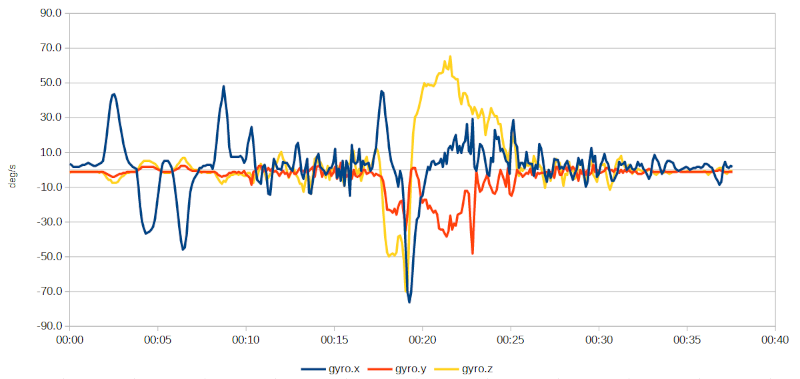Dati raccolti dal giroscopio.
Le tracce del grafico mostrano che i dati ottenuti dal giroscopio sono ben più stabili e di facilissima interpretazione. Analizzando ad esempio l'accelerazione angolare sull'asse x (traccia gyro.x), associata all'angolo di rollio, si riconoscono immediatamente le diverse fasi della prova su strada: i quattro evidenti picchi iniziali sono dovuti alle inclinazioni effettuate a bicicletta ferma — trattandosi di accelerazioni angolari ogni inclinazione genera due picchi, uno durante la discesa, uno durante la risalita. Al minuto 00:17 circa si può notare una nuova, breve inclinazione verso sinistra seguita immediatamente da una sensibilmente più ampia verso destra (minuti 00:18÷00:21): è il tratto di percorso curvilineo.
Queste considerazioni sono confermate dall'andamento dell'accelerazione angolare dell'asse z (traccia gyro.z), associata all'imbardata. Fin tanto che la bicicletta è ferma o procede in linea retta il valore rimane vicino allo zero; quando inizia la sterzata verso sinistra (tratto 2 del percorso) l'angolo di imbardata decresce — corretto: si sta effettuando una rotazione in senso antiorario rispetto all'asse z — per aumentare durante la percorrenza della curva verso destra (tratto 3) e annullarsi sul rettilineo finale (tratto 4).
Individuate con un certo grado di precisione le quattro sezioni del percorso di prova sull'asse dei tempi, le riporto nel grafico dell'angolo di rollio iniziale nella speranza di evidenziare qualche particolare che mi è sfuggito:
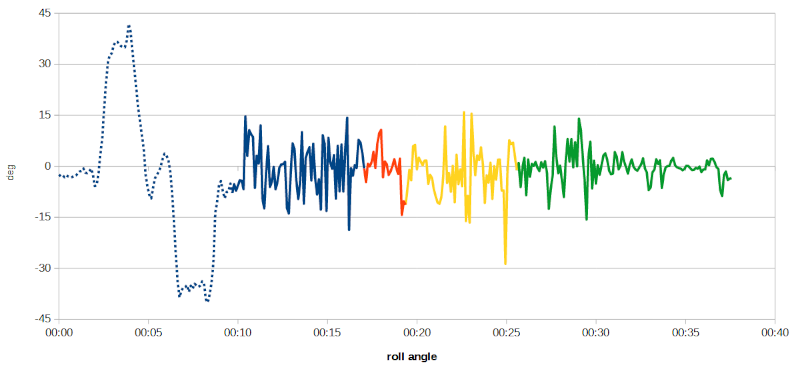Stima dell'angolo di rollio rispetto alle sezioni del percorso di prova.
Nemmeno la colorazione differenziata aiuta a caratterizzare i quattro tratti del percorso.
Mi chiedo a questo punto se abbia più senso ricavare la stima dell'angolo di rollio dai dati del giroscopio. Decido di fare un ultimo tentativo prima di approfondire la questione in rete costruendo il grafico dell'integrale dell'accelerazione angolare gyro.x:
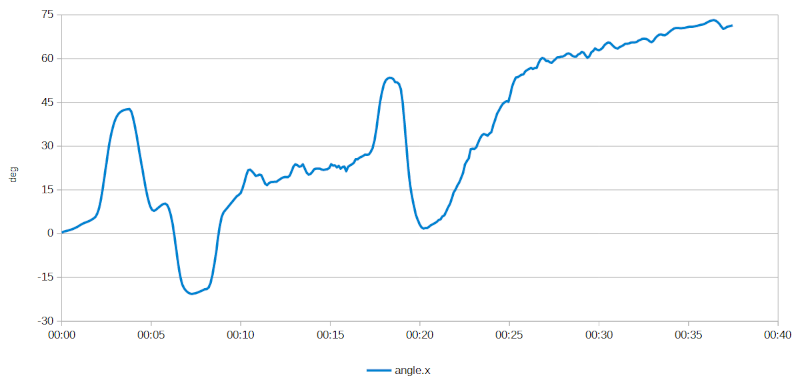Stima dell'angolo di rollio come integrale del valore di accelerazione angolare.
L'andamento è quello atteso: si riconoscono le inclinazioni iniziali e quelle effettuate sul tratto curvilineo del percorso, ma è presente anche una deriva inaccettabile, probabilmente dovuta alla presenza di un offset nel giroscopio o qualche altro effetto fisico di cui ignoro l'esistenza che l'integrazione nel tempo rende così evidente. È giunta l'ora di riporre Arduino e studiare un po'…
Una rapida ricerca nei forum di Arduino conferma che il problema è ben noto ed è stato affrontato più e più volte, ad esempio nel thread intitolato Calculate Angle with MPU6050 dove qualcuno suggerisce di approfondire il tema dei sistemi AHRS:
Sounds like you are looking for an AHRS (Attitude and Heading Reference System), which gives body orientation for flying models…
La stessa questione è affrontata anche su StackExchange; nella domanda A proper way to get the roll, pitch and yaw values, un utente propone come possibile soluzione il sensor fusion:
Luckily, you can combine both imperfect measurements into a single, better orientation estimate using a sensor fusion algorithm.
Una soluzione alternativa molto gettonata è l'uso di un filtro di Kalman; a titolo d'esempio cito l'articolo Roll angle estimator based on angular rate measurements for bicycles, a cura di Emilio Sanjurjo e altri.
Su questo tema ritengo interessante la risposta dell'utente kersny alla domanda Combine Gyroscope and Accelerometer Data su StackOverflow, che recita:
Kalman Filters are great and all, but I find the Complementary Filter much easier to implement with similar results.
Nota: realizzo solo ora che nella scelta della soluzione finale sarà opportuno tener conto della ridotta potenza di calcolo di Arduino, considerata la complessità di alcuni degli algoritmi proposti.
Con un po' di pazienza si trovano diverse soluzioni che si rifanno alla tecnica del sensor fusion:
Idea behind complementary filter is to take slow moving signals from accelerometer and fast moving signals from a gyroscope and combine them. […] the idea is to pass the accelerometer signals through a low-pass filter and the gyroscope signals through a high-pass filter and combine them to give the final rate.
Very often people ask me if they should use a Kalman fiter. My answer is always no. Never use something that you don't fully understand. In a nutshell, a Kalman filter is used to figure out the optimal combination between the gyro and the accelerometer to get the best result. And I can tell you from experience that the accelerometer is always unreliable due to the vibrations. So you only use the accelerometer to correct the drift of the gyro.L'implementazione di Brokking contiene un altro interessante spunto: l'autocalibrazione del sensore. Nell'ipotesi che all'accensione il sensore si trovi in una situazione stabile e immobile, il valor medio dei primi 2000 campionamenti viene utilizzato come stima degli offset che successivamente vengono sistematicamente sottratti dalle letture effettuate per la stima degli angoli durante il funzionamento normale del circuito;
Durante la ricerca sono incappato nella pagina The MPU6050 Explained che spiega nel dettaglio il corretto utilizzo dell'IMU. Tra le altre cose viene citato il DMP interno al chip:
… The next step is to initialize the Digital Motion Processor (DMP). This is the MPU6050’s onboard processor that combines the data coming from the accelerometer and gyroscope.
Sembra dunque che all'interno dell'IMU si trovi un processore in grado di effettuare autonomamente qualche forma di sensor fusion ricombinando i dati prodotti dall'accelerometro con quelli provenienti dal giroscopio. Nel datasheet ufficiale (copia locale) si legge:
The embedded Digital Motion Processor (DMP) is located within the MPU-60X0 and offloads computation of motion processing algorithms from the host processor. The DMP acquires data from accelerometers, gyroscopes, and additional 3rd party sensors such as magnetometers, and processes the data. The resulting data can be read from the DMP’s registers, or can be buffered in a FIFO.
Poter sfruttare questa caratteristica dell'MPU6050 permetterebbe di sgravare Arduino dal compito di elaborare i dati grezzi acquisiti dal sensore liberando risorse da utilizzare per altri scopi, ad esempio per offrire un'interfaccia utente più avanzata.
Il documento tuttavia non spiega come comunicare con questa unità; nemmeno la mappa dei registri (copia locale) contiene informazioni in merito. Fortunatamente la pagina che ho trovato è più che esaustiva: il DMP è un processore interno il cui firmware va caricato all'accensione; la comunicazione avviene attraverso l'uso di alcuni registri non documentati.
La cosa sembra piuttosto complicata da ottenere ma Jeff Rowberg, l'autore della liberia I2Cdev ha predisposto tutto il necessario nel modulo MPU6050. Attraverso l'uso di questo componente software inizializzare il processore e ricavare i dati da esso elaborati è un gioco da ragazzi.
NOTA: la carenza di informazioni sul corretto utilizzo del DMP è probabilmente dovuta al fatto che il produttore ha preferito concedersi la libertà di modificare le specifiche di funzionamento del processore senza dover sottostare al rispetto di un'API prestabilita.
Ho modificato lo sketch originale per ricavare l'angolo di rollio a partire dai dati generati dal DMP; ho dapprima copiato i file MPU6050.h, MPU6050.cpp, MPU6050_6Axis_MotionApps_V6_12.h e helper_3dmath.h del modulo MPU6050 nella cartella dello sketch. A questi ho aggiunto i due file I2Cdev.h e I2Cdev.cpp appartenenti al modulo I2Cdev. Ho optato per una copia locale della libreria per evitare possibili conflitti con quella di Adafruit installata con il Library Manager dell'IDE di Arduino.
Seguendo le istruzioni riportate nel ticket Violation of one definition rule #424 ho successivamente modificato i file MPU6050.h e MPU6050_6Axis_MotionApps_V6_12.h per eliminare i warning emessi dal compilatore durante la compilazione dello sketch:
[file MPU6050.h]
private:
uint8_t devAddr;
uint8_t buffer[14];
#if defined(MPU6050_INCLUDE_DMP_MOTIONAPPS20) or defined(MPU6050_INCLUDE_DMP_MOTIONAPPS41)
uint8_t *dmpPacketBuffer;
uint16_t dmpPacketSize;
#endif
Eliminazione delle direttive #if defined/#endif.
[file MPU6050_6Axis_MotionApps_V6_12.h]
uint8_t MPU6050::dmpGetGravity(int16_t *data, const uint8_t* packet) {
/* +1g corresponds to +8192, sensitivity is 2g. */
int16_t qI[4];
uint8_t status = dmpGetQuaternion(qI, packet);
data[0] = ((int32_t)qI[1] * qI[3] - (int32_t)qI[0] * qI[2]) / 16384;
data[1] = ((int32_t)qI[0] * qI[1] + (int32_t)qI[2] * qI[3]) / 16384;
data[2] = ((int32_t)qI[0] * qI[0] - (int32_t)qI[1] * qI[1]
- (int32_t)qI[2] * qI[2] + (int32_t)qI[3] * qI[3]) / (2 * 16384UL);
return status;
}
Aggiunta del suffisso UL alla costante 16384.
Lo sketch finale è di immediata comprensione. Vale tuttavia la pena soffermarsi sul frammento di codice che determina l'angolo di rollio a partire dai dati ricavati dal DMP: l'unità di calcolo interna all'MPU infatti non fornisce direttamente le misure degli angoli di rollio, beccheggio e imbardata ma un oggetto matematico equivalente, un quaternione. I dati interessanti sono tuttavia facilmente ricavabili grazie ad una funzione ausiliaria presente sempre nella libreria sviluppata da Rowberg:
Quaternion q;
mpu.dmpGetQuaternion(&q, fifoBuffer);
VectorFloat gravity;
mpu.dmpGetGravity(&gravity, &q);
float ypr[3];
mpu.dmpGetYawPitchRoll(ypr, &q, &gravity);
L'archivio contenente l'intero sketch è disponibile qui.
Dopo aver caricato la nuova versione del software sulla scheda ho ripercorso il circuito di prova. Il diagramma sottostante mostra l'andamento dei tre angoli caratteristici: l'imbardata (yaw), in blu, riferita alla scala di sinistra (±180°), il beccheggio (pitch) e il rollio (roll), riferiti invece all'asse di destra (±45°);
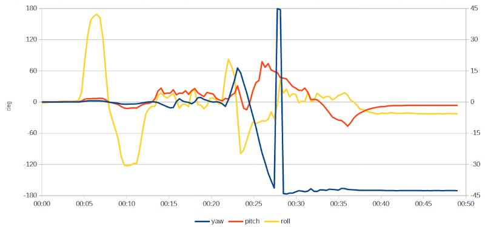Andamento delle angolazioni determinate dal modulo DMP del chip MPU6050.
Lo sviluppo della traccia dell'angolo di rollio si decifra facilmente: si riconoscono le inclinazioni iniziali (la prima, quella verso destra, raggiunge quasi i 45° mentre quella verso sinistra supera di poco i 30°) quindi, a partire dal minuto 00:21 circa, si distingue una breve inclinazione verso destra seguita immediatamente da una più lunga e pronunciata verso sinistra: si tratta delle due sezioni curvilinee del percorso. Se si suddivide la traccia attribuendo ad ogni sezione il colore del tratto di percorso relativo come già fatto in precedenza per la stima ricavata dall'accelerometro si ottiene il seguente diagramma:
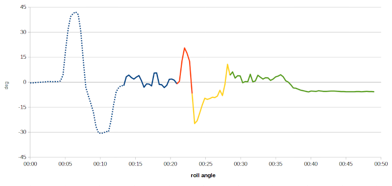Misura dell'angolo di rollio rispetto alle sezioni del percorso di prova.
Applicando lo stesso principio alla traccia dell'angolo di imbardata si ottiene il grafico:
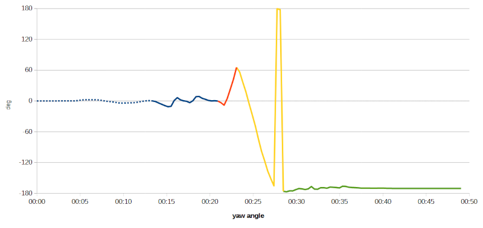Misura dell'angolo di imbardata rispetto alle sezioni del percorso di prova.
Fino al minuto 00:21, ovvero fin tanto che la bicicletta procede in linea retta, senza cambiare direzione, l'imbardata rimane pressoché costante; successivamente il grafico indica che durante il primo tratto curvilineo è stato percorso un arco di circa 60°; durante il tratto seguente, mentre si curva verso sinistra, l'orientamento della bicicletta è scende costantemente fino a -180°, valore che indica che si sta procedendo in senso inverso rispetto a quello di partenza. Lo strano picco che si nota al minuto 00:28 circa è dovuto al fatto che i valori di imbardata elaborati dalla libreria sono compresi nell'intervallo ±180°, quindi valori di poco inferiori a -180° vengono rappresentati come valori di poco inferiori a 180° (es. -181° → 179°). Il grafico va dunque “visto” in questo modo:
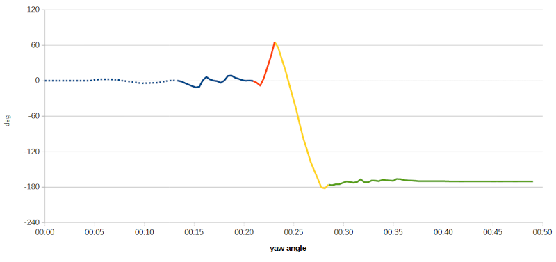Misura dell'angolo di imbardata adattato sull'intervallo -240°÷120°.
Quanto è efficace ed affidabile il processore interno all'MPU6050? La pagina MPU-6050 Redux: DMP Data Fusion vs. Complementary Filter compara i risultati ottenuti dal DMP con quelli ricavati per mezzo di un complementary filter. Le conclusioni sono confortanti:
I don’t have any quantitative data showing which algorithm is better. Qualitatively, however, I can say that for pitch (rotation about the X-axis) and roll (rotation about the Y-axis), the calculations are fairly close, but the complementary filter seems to consistently lag the DMP. The DMP algorithm is able to calculate yaw, which the complementary filter cannot. I suspect that when the algorithms differ, the DMP is more accurate, however it is possible that a better implementation of the complementary filter might be able to reduce some of the lag.
Pagina modificata il 04/10/2020